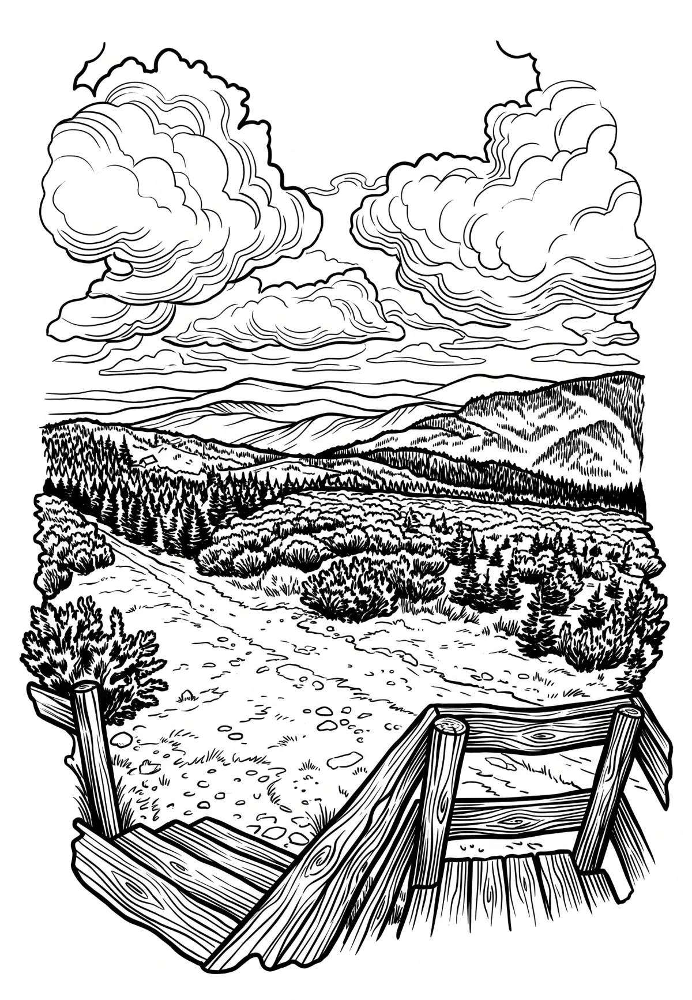

Velká Deštná
Královéhradecký kraj · 1116 m n. m.

přírodní památka · #082
Velká Deštná (německy Großkoppe či Deschneyer Koppe) je s nadmořskou výškou 1116 m n. m. nejvyšší horou Orlických hor. Dříve udávaná výška 1115 m n.
Královéhradecký kraj · 1116 m n. m.

přírodní památka · #082
Velká Deštná (německy Großkoppe či Deschneyer Koppe) je s nadmořskou výškou 1116 m n. m. nejvyšší horou Orlických hor. Dříve udávaná výška 1115 m n.